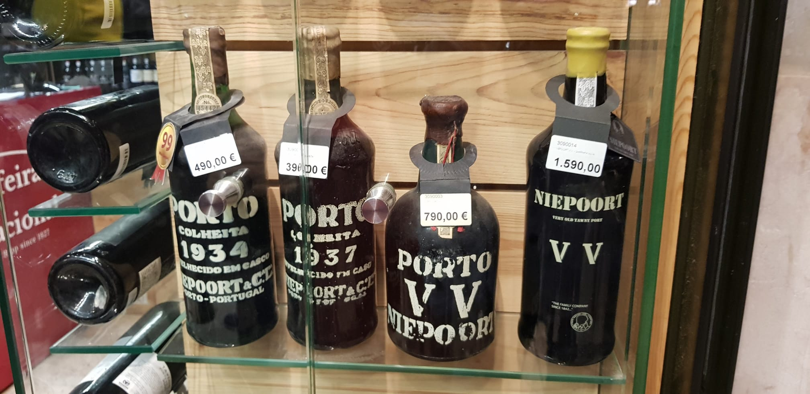
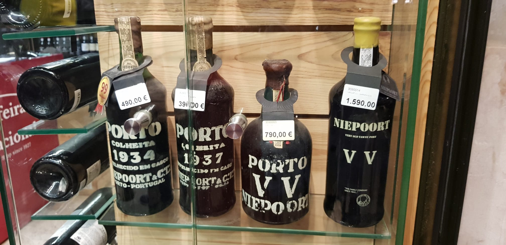
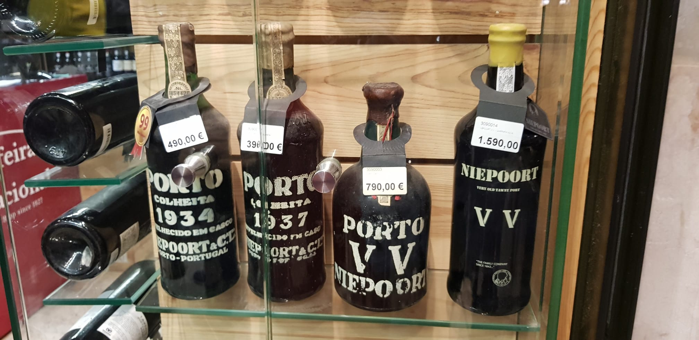

As imagens são meramente ilustrativas de ambientes, percursos e atmosferas que podem fazer parte da sua experiência. Cada serviço é sempre desenhado à medida.
Um registo discreto de alguns dos lugares, luzes e momentos que fazem parte do caminho. Imagens de trabalho real, sem excessos, tal como gostamos de receber.

As imagens são meramente ilustrativas de ambientes, percursos e atmosferas que podem fazer parte da sua experiência. Cada serviço é sempre desenhado à medida.